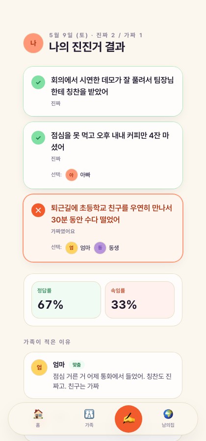
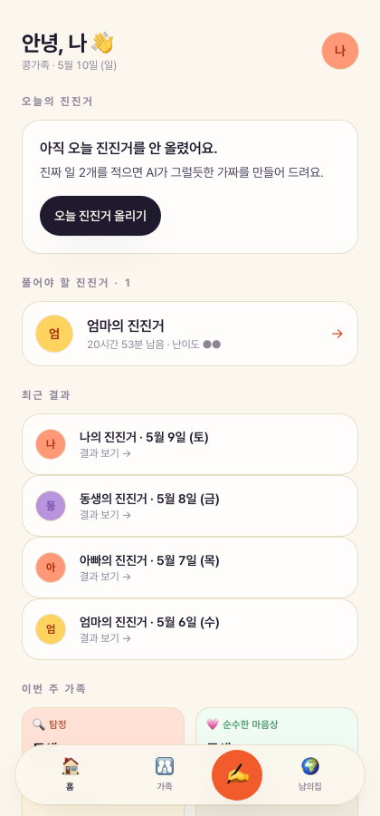
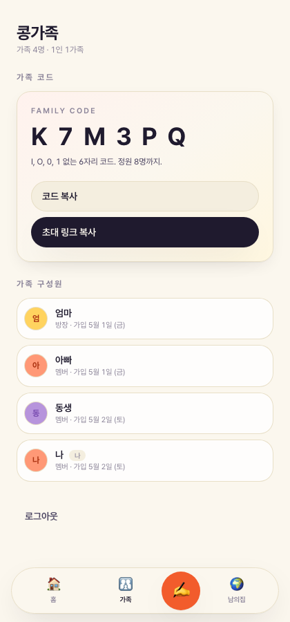
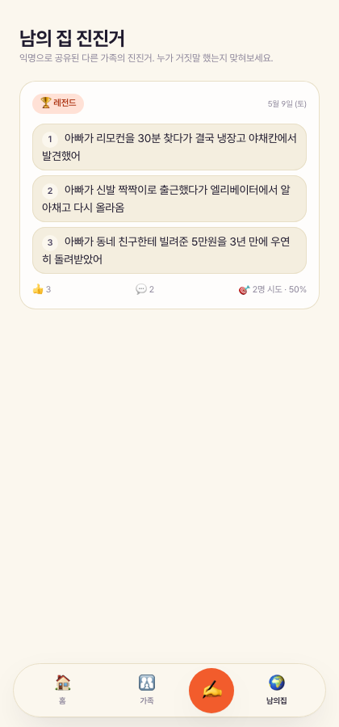
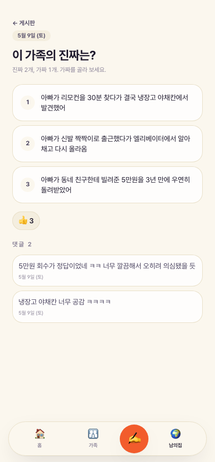

하루진진거 · 한 줄 정의
진짜 2,
가짜 1.
가짜 1.
가족은 거짓을 맞히러 들어오지만, 결국 서로의 진짜 하루를 알게 된다.
가족 데일리
AI + 사람
5분 안에 시작
맞히러 들어와서
하루진진거 — 매일 한 사람의 진진거 한 판으로, 가족의 진짜 하루를 발견하는 데일리 가족 게임.
가족은 거짓을 맞히러 들어오지만, 결국 서로의 진짜 하루를 알게 된다.
같이 살아도 가족은 서로의 하루를 모른다. 단톡방에는 음식 사진과 뉴스 링크만 오간다. 자녀는 답하지 않고, 부모는 잔소리로 들릴까 묻기를 멈춘다.
"투 트루스 앤 어 라이"라는 30년 검증된 사회적 게임을 가족용 데일리 의식으로 재설계. 단순 진진거가 아닌, "진짜 하루"를 발견하는 진진거.
AI가 가족이 헷갈릴 만한 가짜 후보 3개를 즉시 제안하고, 사용자는 그 중 하나를 골라 직접 살을 붙인다. 매일 떠올릴 부담 없이도, 가족 톤이 살아 있다.
한 사용자는 하루 1판만 등록할 수 있다. 어제 놓쳤다면 오늘 백로그 1판 추가. 가족이 모두 풀거나 출제자가 공개하면 결과가 열린다.
결과 화면은 누가 맞혔는지로 끝나지 않는다. 진짜였던 일 두 개에 대해 AI가 후속 질문 칩을 띄워, 가족 댓글로 자연스럽게 이어진다. 이게 "하루진진거"의 하루.

아무도 일방적으로 비참해지지 않게, 점수를 다섯 가지 다른 차원으로 쪼갠다. 잘 맞힌 사람도 잘 속인 사람도 잘 반응한 사람도 모두 이번 주의 누군가가 된다.

홈 · 가족 랭킹
가족 · 코드 K7M3PQ결과 공개된 진진거를 출제자 동의 + AI 익명화로 게시판에 공유. 정답 인덱스는 서버에서만 비교, 가족 식별 정보는 보내지지 않는다. 신규 가족 유입 채널.

게시판 리스트
상세 · 정답 가림스키마·RLS·트리거·RPC + Next.js 15 핵심 흐름 적용 완료. 4명 가족 + 5건 진진거 + 14개 댓글 + 1건 공개 게시물 시드. 발표 종료 시점에 핵심 루프 시연.